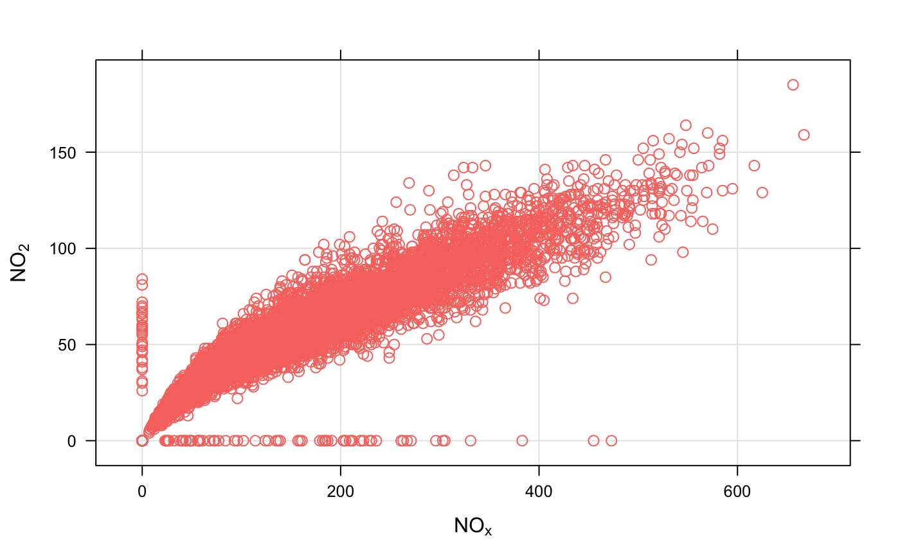
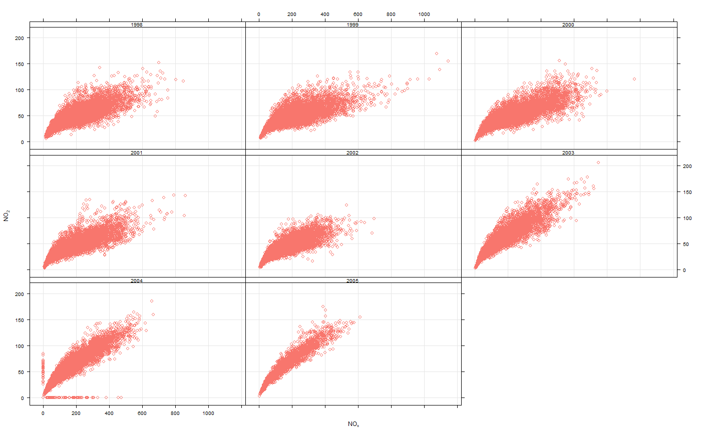

Scatter plots with conditioning and three main approaches: conventional scatterPlot, hexagonal binning and kernel density estimates. The former also has options for fitting smooth fits and linear models with uncertainties shown.
scatterPlot( mydata, x = "nox", y = "no2", z = NA, method = "scatter", group = NA, avg.time = "default", data.thresh = 0, statistic = "mean", percentile = NA, type = "default", smooth = FALSE, spline = FALSE, linear = FALSE, ci = TRUE, mod.line = FALSE, cols = "hue", plot.type = "p", key = TRUE, key.title = group, key.columns = 1, key.position = "right", strip = TRUE, log.x = FALSE, log.y = FALSE, x.inc = NULL, y.inc = NULL, limits = NULL, windflow = NULL, y.relation = "same", x.relation = "same", ref.x = NULL, ref.y = NULL, k = NA, dist = 0.02, map = FALSE, auto.text = TRUE, ... )
| mydata | A data frame containing at least two numeric variables to plot. |
|---|---|
| x | Name of the x-variable to plot. Note that x can be a date field or
a factor. For example, |
| y | Name of the numeric y-variable to plot. |
| z | Name of the numeric z-variable to plot for |
| method | Methods include “scatter” (conventional scatter plot),
“hexbin” (hexagonal binning using the |
| group | The grouping variable to use, if any. Setting this to a variable in the data frame has the effect of plotting several series in the same panel using different symbols/colours etc. If set to a variable that is a character or factor, those categories or factor levels will be used directly. If set to a numeric variable, it will split that variable in to quantiles. |
| avg.time | This defines the time period to average to. Can be
“sec”, “min”, “hour”, “day”,
“DSTday”, “week”, “month”, “quarter”
or “year”. For much increased flexibility a number can
precede these options followed by a space. For example, a
timeAverage of 2 months would be |
| data.thresh | The data capture threshold to use (
the data using |
| statistic | The statistic to apply when aggregating the data; default
is the mean. Can be one of "mean", "max", "min", "median", "frequency",
"sd", "percentile". Note that "sd" is the standard deviation and
"frequency" is the number (frequency) of valid records in the period.
"percentile" is the percentile level (
using the "percentile" option - see below. Not used if |
| percentile | The percentile level in % used when |
| type |
It is also possible to choose Type can be up length two e.g. |
| smooth | A smooth line is fitted to the data if |
| spline | A smooth spline is fitted to the data if |
| linear | A linear model is fitted to the data if |
| ci | Should the confidence intervals for the smooth/linear fit be shown? |
| mod.line | If |
| cols | Colours to be used for plotting. Options include
“default”, “increment”, “heat”, “jet”
and |
| plot.type |
|
| key | Should a key be drawn? The default is |
| key.title | The title of the key (if used). |
| key.columns | Number of columns to be used in the key. With many
pollutants a single column can make to key too wide. The user can thus
choose to use several columns by setting |
| key.position | Location where the scale key is to plotted. Allowed arguments currently include “top”, “right”, “bottom” and “left”. |
| strip | Should a strip be drawn? The default is |
| log.x | Should the x-axis appear on a log scale? The default is
|
| log.y | Should the y-axis appear on a log scale? The default is
|
| x.inc | The x-interval to be used for binning data when |
| y.inc | The y-interval to be used for binning data when |
| limits | For |
| windflow | This option allows a scatter plot to show the wind
speed/direction shows as an arrow. The option is a list
e.g. The maximum length of the arrow plotted is a fraction of the plot
dimension with the longest arrow being This option works best where there are not too many data to ensure over-plotting does not become a problem. |
| y.relation | This determines how the y-axis scale is plotted. “same” ensures all panels use the same scale and “free” will use panel-specific scales. The latter is a useful setting when plotting data with very different values. |
| x.relation | This determines how the x-axis scale is plotted. “same” ensures all panels use the same scale and “free” will use panel-specific scales. The latter is a useful setting when plotting data with very different values. |
| ref.x | See |
| ref.y | A list with details of the horizontal lines to be
added representing reference line(s). For example, |
| k | Smoothing parameter supplied to |
| dist | When plotting smooth surfaces ( |
| map | Should a base map be drawn? This option is under development. |
| auto.text | Either |
| ... | Other graphical parameters are passed onto
For |
As well as generating the plot itself, scatterPlot also
returns an object of class ``openair''. The object includes three main
components: call, the command used to generate the plot;
data, the data frame of summarised information used to make the
plot; and plot, the plot itself. If retained, e.g. using
output <- scatterPlot(mydata, "nox", "no2"), this output can be
used to recover the data, reproduce or rework the original plot or
undertake further analysis.
An openair output can be manipulated using a number of generic operations,
including print, plot and summary.
The scatterPlot is the basic function for plotting scatter plots in
flexible ways in openair. It is flexible enough to consider lots of
conditioning variables and takes care of fitting smooth or linear
relationships to the data.
There are four main ways of plotting the relationship between two
variables, which are set using the method option. The default
"scatter" will plot a conventional scatterPlot. In cases where there
are lots of data and over-plotting becomes a problem, then method =
"hexbin" or method = "density" can be useful. The former requires
the hexbin package to be installed.
There is also a method = "level" which will bin the x and
y data according to the intervals set for x.inc and
y.inc and colour the bins according to levels of a third variable,
z. Sometimes however, a far better understanding of the relationship
between three variables (x, y and z) is gained by
fitting a smooth surface through the data. See examples below.
A smooth fit is shown if smooth = TRUE which can help show the
overall form of the data e.g. whether the relationship appears to be linear
or not. Also, a linear fit can be shown using linear = TRUE as an
option.
The user has fine control over the choice of colours and symbol type used.
Another way of reducing the number of points used in the plots which can
sometimes be useful is to aggregate the data. For example, hourly data can
be aggregated to daily data. See timePlot for examples here.
By default plots are shown with a colour key at the bottom and in the case
of conditioning, strips on the top of each plot. Sometimes this may be
overkill and the user can opt to remove the key and/or the strip by setting
key and/or strip to FALSE. One reason to do this is to
maximise the plotting area and therefore the information shown.
linearRelation, timePlot and
timeAverage for details on selecting averaging times and
other statistics in a flexible way
David Carslaw
# load openair data if not loaded already dat2004 <- selectByDate(mydata, year = 2004) # basic use, single pollutant scatterPlot(dat2004, x = "nox", y = "no2")  if (FALSE) { # scatterPlot by year scatterPlot(mydata, x = "nox", y = "no2", type = "year") } # scatterPlot by day of the week, removing key at bottom scatterPlot(dat2004, x = "nox", y = "no2", type = "weekday", key = FALSE)  # example of the use of continuous where colour is used to show # different levels of a third (numeric) variable # plot daily averages and choose a filled plot symbol (pch = 16) # select only 2004 if (FALSE) { scatterPlot(dat2004, x = "nox", y = "no2", z = "co", avg.time = "day", pch = 16) # show linear fit, by year scatterPlot(mydata, x = "nox", y = "no2", type = "year", smooth = FALSE, linear = TRUE) # do the same, but for daily means... scatterPlot(mydata, x = "nox", y = "no2", type = "year", smooth = FALSE, linear = TRUE, avg.time = "day") # log scales scatterPlot(mydata, x = "nox", y = "no2", type = "year", smooth = FALSE, linear = TRUE, avg.time = "day", log.x = TRUE, log.y = TRUE) # also works with the x-axis in date format (alternative to timePlot) scatterPlot(mydata, x = "date", y = "no2", avg.time = "month", key = FALSE) ## multiple types and grouping variable and continuous colour scale scatterPlot(mydata, x = "nox", y = "no2", z = "o3", type = c("season", "weekend")) # use hexagonal binning library(hexbin) # basic use, single pollutant scatterPlot(mydata, x = "nox", y = "no2", method = "hexbin") # scatterPlot by year scatterPlot(mydata, x = "nox", y = "no2", type = "year", method = "hexbin") ## bin data and plot it - can see how for high NO2, O3 is also high scatterPlot(mydata, x = "nox", y = "no2", z = "o3", method = "level", dist = 0.02) ## fit surface for clearer view of relationship - clear effect of ## increased O3 scatterPlot(mydata, x = "nox", y = "no2", z = "o3", method = "level", x.inc = 10, y.inc = 2, smooth = TRUE) }